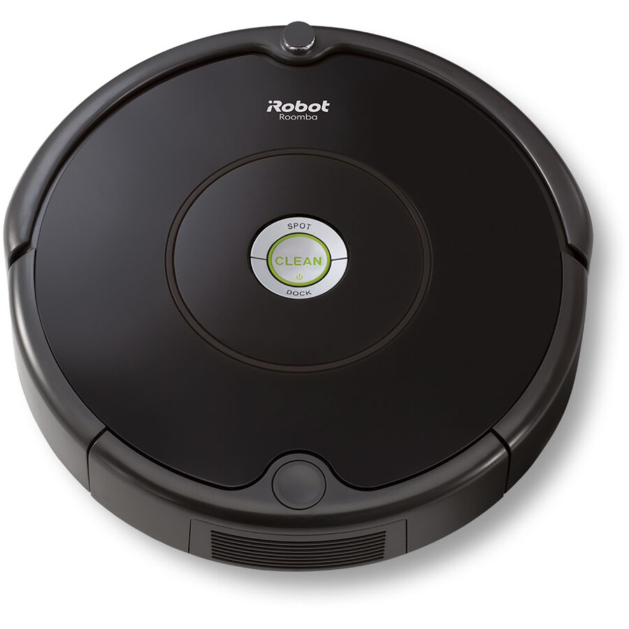
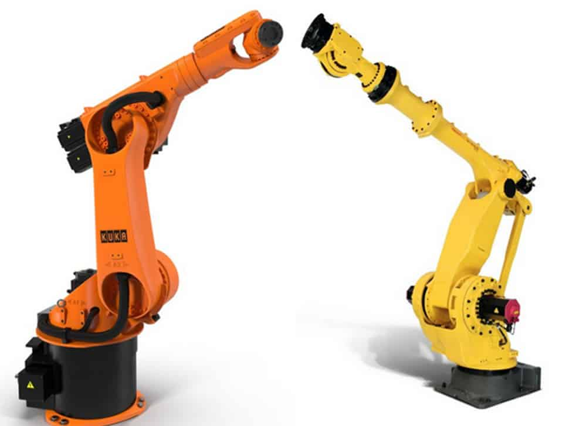
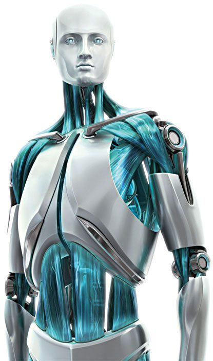

My name is Ariyan Aghdassi, and I am currently studying a Bachelor of Information Technology at RMIT. I was given the student number s3895258 which correlates to my student email s3895258@student.rmit.edu.au one and a half years ago. This is due to the fact that I originally completed both a Diploma of Surveying and an Advanced Diploma of Surveying. While deciding whether to resume Surveying as a career and enter the Bachelor of Applied Science (Surveying), I came to the tough decision to change my future and decided to go into Bachelor of IT. My name is from a Persian descent as I am half Persian from my dad’s side as well as half Russian from my mum’s side. However, I was personally born in New Zealand and moved to Australia Christmas 2004, at the age of 20 months and did not receive my Australian citizenship until 2013.

I am quite a big fan of gaming and have been since around the age of 4. Furthermore, the game I have played most of all is Super Smash Bros Brawl for the Nintendo Wii. The reason for this is that I really enjoyed playing it for both the multiplayer mode as well as the story mode called Subspace Emissary. This story mode brought all of Nintendo’s biggest characters together and it blew my mind at a young age. I played this game up until 2018, when Super Smash Bros Ultimate came out on December 7th as I never owned a Wii U or 3DS to play Super Smash Bros 4. In 2021, I eventually decided to build my own PC, making a GeForce RTX 3060 build which is the GPU of the system. Ever since then I have never really touched another console as PC is just too convenient and has multiple uses. Although I have a big interest in gaming, I also have an interest in watching anime and reading manga in which my favourite animanga (anime/manga) of all time is JoJo’s Bizarre Adventure. Written by Hirohiko Araki It is a very strange story where each part features a new protagonist going on quite a “bizarre adventure” and putting an end to each villain with some characters returning in later parts. It is very enjoyable; however, it can be very sad, and each part’s ending is bittersweet to some extent. The character designs are very unique and can be a little bit questionable for some certain characters. Overall, a 10/10 animanga for me.

Referring back to my hobbies, my interest in IT definitely started with gaming when I first played Tekken 3 on a PlayStation One, ever since then I bought every PlayStation and even eventually expanded to other platforms such as Nintendo and PC. I was introduced to gaming by my brother who owned the PlayStation One at the time, he also showed me how to use a lot of technological devices such as cameras and phones. However, since building the PC that I mentioned before, my interest IT really expanded and felt quite an accomplishment after. I started moving towards IT over surveying as I enjoyed the aspects of IT much more. While surveying deals with technology and programs such as AutoCAD, it is very hands on compared to jobs in IT.
My name is James Watson, S3955201, s3955201@student.rmit.edu.au, I come from sydney. I recently moved to melbourne after finishing highschool and have lived there since birth. My main language is English and I am non religious. My favourite hobby is either playing tennis when I am outside or playing computer games inside.
When I was 4 I got my first PC which was a laptop and have loved using technology since then. In highschool one of the first electives that i picked was IT in year 9 and 10, then in year 11 and 12 i picked SDD (software design and development), i also wanted IPT (information process technology) however only one of these could run at the time and SDD had the majority pick. My interest in IT has come from gaming, the use of computers when i was younger, my dad, and liking to code. I chose to come to RMIT because my dad had work down in Melbourne and the offers from Sydney were very slow, the first offers handed to me were RMIT before any other university. My IT experiences include: Python for 3 years, C# for a year, and a bit of Lua roughly half a year (still learning). In my studies I expect to learn some new languages relating to web development and coding, possibly more teamwork, and expand my skills for going to a job.
Hi, Hello and Good day, my name is Klarisa Arwena Anhar, and I’m a student in RMIT, I’m 18 years old – born on 1st of April 2004 – and I’m pursuing a degree in Information Technology, I graduated from high school not too long ago, so my educational background is limited (though I look forward to learning many new things during university). Also, I’m from Indonesia, but I’m hoping to get Australian citizenship one day. My native language is Indonesian, but I can speak about 3 other languages, if you count dialects (Bahasa Sunda and Bahasa Jawa) as a language that is, because although both my parents were born and raised in Indonesia, they come from two different subcultures (one Sundanese and the other Javanese)
I’m around 163cm, or 5’4 if you use feet, I’m deathly allergic to cats, I owned a tiny pet spider once, and I’ve got a deep love for gaming, drawing, anime, and cooking shows! (and sometimes, the irl cooking)
Although I don’t play games as often as I used to, I’m still very fond of life simulation and sandbox games, from games like Harvest Moon (very nostalgic, I had it on my PSP at age 5) to games like Minecraft (been playing from 2010) or Sims 4 and Spore. I prefer soothing games over violent ones, though I do commit a fair share of war crimes and murder in The Sims.
My passion for drawing and anime is somewhat intertwined, since the only things I draw are just, cute chibi fanarts of animes I’ve watched, animes like SpyxFamily, Food Wars, K-On!! and Poco’s Udon World and so on. The only reason I don't pursue art as a major is because art is a pastime, not something I would want to do as a job.
Now onto cooking shows! I’ve always been a foodie; I love to eat all sorts of food and I love to watch people cook all sorts of things. It’s quite therapeutic to watch people cook, frankly, but not as enjoyable when I’m the one doing the cooking myself because I hate doing the dishes :(

My name is Heng-Chia Chang (Isaac) whose student number is 3860650 and email address is s3860650@student.rmit.edu.au. I was born in Taiwan where Portuguese called “Formosa”, which means, a beautiful island. Stinky Tofu, Pearl Milk Tea and Pig Blood Cake are the most special and unique dishes in Taiwan. I love playing basketball and my favourite NBA team is the Los Angeles Lakers due to LeBron James. I have been his fan since I was 7. Semester 2 2022 is officially my first year in RMIT University and I am excited about the new chapter in RMIT in Australia.

My name is Mitchell Groenewaldt, I was born in Australia at the Austin Hospital, my background is half Italian on my mother’s side, half South African on my dad’s side. My mum was born in Australia, whilst my dad was born in Cape Town, South Africa.
In terms of culture, I usually follow the traditional Italian culture of spending lots of time with family such as my grandparents and cousins, we often catch up for a meal, commonly having something Italian, or even something light like a coffee or tea.
Education that I have completed consists of Year 12 VCE, and Diploma of Information Technology at RMIT.
One interesting fact about myself is I am a massive car enthusiast, I have been a major car fanatic ever since the age of 3, according to my parents, I could name any car, even rare cars like the Jaguar XJ220 (shown in the image below) without seeing the badge.

My interest in IT started at the age of 4. My interest in IT mainly consists of working on computers such building PCs for not only myself but friends as well as meeting their requirements, performing maintenance such as repairs and troubleshooting, setting up routers which I had done in my Diploma of IT I enjoyed the physical aspect of hooking up routers and switches to each other, and if possible, to work on ECUs (Engine Control Unit) on cars, mainly perform ECU tuning, as ECU tuning is a very big element in the automotive industry, lots of high-end racing manufacturers such as Nissan Motorsports International (NISMO), Mugen Motorsports, Scuderia Ferrari, and many other companies (even locally) have a large demand in ECU tuners, as not many people have taken upon this role, so it combines my two favourite things, cars and IT.
My name is Neil Biju Mathew, and my student ID is s3961553. I can be contacted through my student email which is s3961553@student.rmit.edu.au. I was born in India and I hold an Indian passport but I have been studying in Australia since 2018. Along with English, I also speak Malayalam which is my mother tongue and mainly use it with my parents and family. I completed most of my secondary education in Australia and now I am doing a Bachelor of IT at RMIT. I have been working at Hungry Jacks for about 3 years and on my way to getting certified as a manager.
Even though I have absolutely no skill in singing, listening to music is something I enjoy a lot, maybe a bit too much. The main genres of music I listen to are hip-hop and r&b but my taste in music spreads across various languages and artists. Soccer and track events are my fav sport activities to get involved in and I am planning to get back into it by next season.
Ever since I was a child, I have been really interested in anything that involves batteries or any other electronic/electrical devices. Taking devices apart and messing around with it was something I enjoyed even though I never knew how to put it back together. My father being an IT professional is one of the main reasons towards my interest in technology, but it was not until the recent years that I understood the specifics of IT and how it is used around the world. RMIT came into my attention as I was looking for possible courses to do after year 12. My interest in RMIT grew after I worked for an event management service which set up the 2021 RMIT graduation. The massive event where people were rewarded their graduation certificate really made me want to graduate from RMIT one day. During my study at RMIT I am expecting to gain knowledge regarding my area of study and graduate with a bachelor’s degree by the end of the course. I later plan to use that degree to get a job in a workforce.
After taking the Myers-Briggs test and receiving the personality type commander, I have learnt quite a lot about myself. According to the test most of my personality is very even, most shockingly that I am more extraverted than introverted. This is very different to what I thought as I believe I am quite a shy person, however after seeing this result, my social life makes more sense.
I struggle to talk to someone if I have never spoken to them before, but as soon as I have, I have no issues at all. This result is quite beneficial as it has increased my confidence as well as ensured I am able to work in a team of people well. While looking at this result, it has come to my attention that I will most likely be the leader and create the team. This is due to the fact that the results display that I am intuitive and thinking most of the time, meaning I’ll have to be quite proactive instead of waiting for people to come to me and telling me what to do. The only issue that the results contain is that I am 79% turbulent which can cause some problems however, it can also be used as fuel for determination to challenge myself and get through all the problems that appear.
As stated in the ideal job, I am striving to become a data analyst, this test shows that my role would be a leader and an analyst which works perfectly as it also states that I am striving for greatness no matter the challenge. However, this can be an issue as personality that the test gave me shows that I am poor at handling emotions and can be quite impatient and arrogant in which could set me back from completing these challenges. Overall, the test results were very surprising and make a lot of sense when I compare them to my life.
The results of the learning style test were quite consistent with what I believe my learning style is at in which that is tactile. This shows that I am a hands-on learner and prefer learning through practicals which true when it comes to my personal learning. I am definitely a person who learns better when attempting to do work rather than watching how to do work. This can be good or bad when it comes to working in a team, this is because it would theoretically be more difficult to work with a team if they show me what to do rather than let me do it myself and ask for help if needed. Overall, this test result wasn’t all that surprising.
According to the creativity quiz, my creativity is a “work in progress” which is the strangest to me. I have always thought I am a very creative person but this quiz tries to prove me wrong in that I’m semi-creative and that I need to be more innovative. Although the quiz states I’m not entirely a creative person, I will continue to believe I am as I contain the qualities of creativity. Those qualities contain open-minded, flexible, intuitive, and risk-taking. I am definitely an open-minded person and am willing to find new ideas to solve problems that arise. This can definitely help when working in a team as I am able to listen to the team members and use their ideas which allows me too also be flexible. I’ll be able to solve issues efficiently when they occur as well as be intuitive to taking risks that will allow me to also solve issues effectively.

I’ve taken the Myers-Briggs test a few times over the years, out of curiosity, and I’ve noticed that I’ve been quite consistent with my personality type; The Campaigner, or ENFP.
According to the test, ENFPs are “social butterflies” who are friendly, warm, enthusiastic, outgoing, lively, and upbeat. The types of people who love to spend time and make emotional connections with others, and are often the “life of the party” since they tend to stand out. ENFPs are free-spirits who are strongly passionate with the things they’re interested in, and are incredibly creative with their imaginations. Unfortunately, they can be quite a bit too disorganised and overthink because they get too attached to people.
With all of this in mind, I’d like to say that I’m not really that extroverted, I would consider myself more of an ambivert – shy with new people but very loud and chaotic with people they’re familiar with – but overall I believe that the test is quite accurate. Those who know me say that I’ve got a pleasant disposition, with a calming yet chaotic vibe, and it’s true that I’ve got a whole lot of ideas and concepts in my head, and I do hyperfixate on things that fascinates me.
In job terms, I feel like this would make me a wonderful team player, since I’m quite good at cooperating with team members, and I’m quite open-minded to diverse types of personalities and strive to understand different people in-depth. I prefer not to be a leader because although I enjoy taking charge and initiative with my ideas, I find it hard to put in the hard work when I’m not 100% into the project, and if it goes south, I’ll probably overthink it to the point of a panic attack.
The results for my learning styles test are, not so surprisingly, a tie between auditory and visual learner, which makes sense because I do tend to learn better when people show me how to do things themselves, and I understand things better once I get a good grasp on the concept. Unfortunately, I feel intimidated when I dive head first into a hands-on experience, and I feel a little lost without guidance or help, and that would probably make me a better follower than a leader if I’m being honest.
Through the Big Five Personality (OCEAN) test I’ve discovered that I’m an intensely open and extroverted person, who is very agreeable and not very disciplined, which I’d say is quite accurate.. Except the part that says I'm over 75% extroverted. I’ve mentioned above that I’m mostly talkative when it’s with someone I’m familiar with, but I’m gradually starting to see why I’m labelled as extroverted a whole lot; although I’m shy I can still talk to strangers no problem, and I have no problems in making friends or connections, mostly because I’m very open with my opinions and I’m rarely ever judgmental. In addition to that, the fact that I try awfully hard to make a good impression on new people would make me come off as agreeable… maybe to the point of becoming a pushover sometimes. I’m also aware that I lack discipline from my impulsiveness and extreme last-minute procrastination, but it’s something I’m working hard on, and so far it hasn’t really affected my work ethic much, because I do get the job done in the end, and I don’t mind trying new things.
After completing the online Myers-Briggs test, I found that I am a logistician. The result is quite similar to my personality, for example, stubborn, honest and judgement etc. The result is kind of to value myself and to prove I am on the right track of my ideal career. By doing the Myers-Briggs test I have a deeper and more comprehensive understanding of myself and then I can strengthen my weaknesses or drawbacks. On the other hand, I get to know more about my advantages and to maintain them. Myers-Briggs test lets me have more time to adjust my habits to experience better in a group.
Myers-Briggs tests have mentioned some weaknesses and strengths about my personality which I can improve in teamwork especially. It mentions that I am not a talkative person and I am not good at drawing attention. With this, my ideas might be ignored by other teammates or crew members. It also talks about how a logistician is the most careful and likely personality type to avoid risk or to come up with an idea for an unpredictable situation. Having a person doing the business very carefully and barely making mistakes might be one of the best things in any team in the world. Logistician can somewhat foresee what is going to happen and it creates more time for the team to resolve the problems.
If I have a chance to build a team on my own based on the Myers-Briggs test, I would prefer my team members to have similar personality types to mine, which is logisticians. Same personality type of people on the same team probably would have a better experience, better communication and similar thoughts. Having the same type of personality on the same team could be a good signal, but ideas could be too monotonous. Having some different types of personality can help me to get a variety of different ideas and aspects which these ideas and aspects I cannot come up with. Eventually, I would build a team based on the same personality type and interspersed with different personality types to have a better experience, performance or atmosphere.

The results state that I am a Consul personality, meaning that I am a very supportive, social, and well-mannered person. This means to me that I have the skills and personality to work well with others, even in a team, I can either work as a team leader, or team supporter (helping the team achieve goals or resolve any issues). Also, I have discovered that this also means I am very supportive and can help others when they are in need.
From the test, I have discovered that I am both a Visual and Tactile learner, I found this rather unsurprising, as I’ve always found when it came towards learning and working, I’d always prefer to be shown how to do things, along with also having a physical attempt or practical work with the topic at hand. I struggle to learn when I am being shown PowerPoints/Presentations, as I am sitting inactive, and my brain starts to struggle to focus and learn as I am not seeing nor physically doing anything. Visual learning such as interesting videos or being physically taught, keeps me focused, and helps me learn. Along with physical practical work, as I get to perform trial and error, which also keeps me focused.
My creativity test shows that I have a “work in progress” form of creativity, the results had surprised me as I honestly thought I had lost my creativity from using it all up as child, but I suppose these results show I still have some creativity left in me, and perhaps it is slowly developing back. I personally feel I am not very creative, as a lot of times I go to organise something with friends whether it be a game or day out, I usually struggle to come up or decide on anything. I feel my creativity is limited to certain areas that I have a strong interest and passion in such as cars as an example.
The results of the above gives me an idea of what my personality, learning style and creativity level are. Even though I don’t believe it is 100% accurate, I think it provides a good outline which can be used to identify my strengths and weaknesses. The Myers-Briggs test shows that I am an extroverted person who is intuitive and works mainly on feeling rather than thinking. I don’t believe this completely describes my personality, but I see some sense it. The learning style test shows that I am a visual learner which I agree to. I have always felt that I learn better through visuals and actual demonstrations. The creativity shows my creativity level to be “work in progress”. I believe this is due to me not following up with my ideas rather just scraping it halfway.
The above results show that I am an extroverted person who goes off by their emotions most of the time. These results do not completely define me, and I am confident in my ability to work in a team. From my current and previous experiences, working in a team is something that I enjoy and consider my strength. My “work in progress” level of creativity is something that I need to work on in order to be able to effectively contribute to a creative team. Even though I am a visual learner, I am confident in my ability to understand verbal information. By putting more effort into both visual and auditory learning, I believe I will be able to work effectively in a team.
The main things that I should consider when forming a team is my ability to understand and communicate effectively with my team members. Forming a team of people with similar personality traits and learning style is the best and easiest way. However, I believe that having different types of people with different attributes and skills are a key part of forming an efficient team. Working around the challenges that arise should also be a key part when considering team formation.

The job titles from our group’s ideal jobs include senior software developer, IT manager, data analyst, game designer and junior IT hardware tech support. In terms of ranking of demand from employers, data analyst is in most demand from employers. This is because data analyst skills are very sought after and the people who have the skills to do this job are very rare and limited, therefore making it the highest in demand. The job highest in demand after data analyst is senior software developer. Since 2021, the demand for senior software developers has doubled. The demand for data analyst and senior software developers are very similar as both are extremely skillful jobs and require lots of experience. Third highest job in demand by employers is IT managers. IT managers have slowly gone up in demand ever since the rise of technology and is expected to grow 16 percent by 2031. This is due to the fact that IT managers are mostly required in the majority of IT fields to monitor and organise work and activities. Fourth highest job in demand is junior IT hardware tech support. Junior IT hardware tech supports are in demand due to being needed everywhere to assist in IT, not only that but they are much cheaper to pay compared to seniors, therefore making them in demand. Finally, the last job in demand is game designer. Game designer is not in as much demand as the other jobs as it isn’t too important to the rest. However, that does not mean it isn’t still in high demand. The market for gaming is ever rising and due to that, more and more game designers are needed to fill that rising market, therefore game designers are still in high demand.
All the ideal jobs in the group require some sort of programming language whether that be Java, Python or SQL, employers are looking for employees that have those skills. In terms of data analyst, the majority of employers are looking for employees that are able to use SQL or some other similar database language as that is the majority of the time what is required in order to analyse data. As for the other jobs, senior software developers and game designers are also required to know some sort of programming language. Employers will only want employees that know everything, even programming languages.

In terms of general skills required, the demand from employees is very similar in all jobs, however the most depended on would be IT manager. This is because an IT manager requires managing skills such as overseeing, organising, and making sure everything is running smoothly. For the rest of the jobs, the general skills that are in demand are working as a team, and working efficiently and effectively. This is because technology jobs have you usually working as a team. As for working efficiently and effectively, technology jobs can require a job to be completed to a standard, usually professional as well as be completed in a set amount of time. Therefore, those skills are quite in demand from employers.
In terms of general skills, the majority of them that are required are also required for our ideal jobs, this is because most general skills are needed for nearly every job. However, one skill that isn’t necessarily applicable to all our jobs is self-management. Some of the jobs such as junior IT hardware tech support have their own manager, meaning you cannot self-manage. This is a skill that is ranked quite high as it can be required for a lot of jobs but not all our jobs. Other than that our jobs require mostly every important general skill required for a job.
In terms of ideal jobs, and having looked at burning glass data, our opinion of our ideal jobs has not changed. While some jobs are higher in demand then others, all the jobs are still in high demand as they all require a high professional set of skills. Therefore, in terms of demand there is not too much of a difference between the jobs and overall, our opinion will stay unchanged.
Advanced robots go back all the way back to the 1940s. Since then however, robots have become much more intelligent and technologically advanced to the point where the majority of them can complete quite difficult tasks with ease.
There are different types of robots that exist that are made specifically for a task or job. Some types of robots include autonomous, which are very smart robots and traditional industrial, non intelligent robots.
Autonomous robots are a type of robot that acts on their surrounding environment. Majority of autonomous robots rely on themselves rather than be controlled by a human. By gaining information through what is sensed by vision, noise or feel for example, autonomous robots can make decisions based upon the most logical most of the time. Most autonomous robots are made to work for humans to make the human life easier. Some examples of autonomous robots are vacuum cleaners such as the iRobot range and autonomous vehicles such as the tesla range. Expanding on the senses, the majority of autonomous robots use infrared or ultrasound sensors. This allows most of the robots to avoid hazards and obstacles as they can then be seen. Therefore, autonomous robots are used in places such as warehouses and manufacturing companies. There are plenty of benefits of autonomous robots, one benefit is self-care. Autonomous robots can connect themselves to a charging station like the Roomba which can also empty itself on the charging station. This is because autonomous robots are able to detect when their batteries are running low.
Traditional industrial robots are robots that are designed to withstand a lot of pressure in which they are used in quite dangerous and inaccessible areas. This helps deal with a lot of problems that normal human beings cannot do. Majority of traditional industrial robots are used for manufacturing, typically assembling, disassembling, welding with other things as well. There are many types of traditional industrial robots such as articulated, cartesian coordinate and cylindrical coordinate as an example.
While robots are quite interesting and help society handle many of their issues and their production of items and services, they can be quite harmful sometimes. An example of this is when a robot in Russia was used as a chess playing robot. This robot should not have been used as it is an industrial articulated robot and ended up breaking a 7 year old boy’s finger. There are many accounts of when robots have hurt or even killed someone. Robots can always malfunction at any time which can cause major issues to businesses as a result of a stoppage in manufacturing or entertainment.
Although robots have their pros and cons, one of their biggest cons is their price. The more household robots are much cheaper and can run from $100+, however many professionally made robots can cost hundreds of thousands. This can be quite bad as once purchased, the robots can have malfunctions and issues like I had mentioned before. Due to this more money would have to be spent in order to fix a robot and keep it maintained. This can cause businesses loss of money in order to fix the robots they use and own.
There can be a lot of impacts of robots, however the largest impact of robots is replacing humans in the workplace. As I had stated previously, robots are very convenient and help humans with their issues, due to this majority of jobs that are able to be replaced are being replaced. We have been seeing this in areas such as fast food, through kiosks. Rather than just purchasing food from the counter by humans, people can order their food on kiosks which speeds up the whole process of ordering food. By looking at statistics from G. Dautovic on Fortunly, robots can replace 20 manufacturing jobs by 2030, this estimates that every one industrial robot will replace 1.6 humans.
Another large impact is the economy. The average wage of humans will slowly decline as more and more jobs are replaced, this is because robots overall are cheaper to deal with compared to humans. Companies have responsibility for health and safety of employees and other responsibilities, robots do not so they are more sought after in the workplace. However, robots can also have a positive impact on the economy as they can efficiently and effectively complete manufacturing of plenty of products, much faster than humans. Therefore, more products can be manufactured when robots are doing the manufacturing rather than humans. This would result in more money as more products sold means more revenue which in time creates success for a business and keeps it running.
I don’t believe this would affect me too much. Due to the fact that I am planning on becoming an IT professional, chances are I would be dealing with robots rather than them replacing me. Technically speaking, robots would be a good thing for me as I could make money from these robots and make them a benefit for me.
On the other side it could also affect my family in a negative way, robots could replace their jobs and then they would have no income. This can also be negative for me as I currently live with them while studying. Without income, there would be no way to pay for bills, necessities and belongings would be taken.
Overall, I prefer that robots don’t become a massive part of society as it will create more issues than benefits for society itself. Whether that be in terms of death and injury, loss jobs or the economy, robots should never become something that we have to rely on as then we will never be able to recover.
An autonomous vehicle is a fully driving system. It is capable of detecting its surrounding objects by using radar and it can operate without human’s order. With this, human or driver are not necessary to control vehicle because it can control itself. Autonomous vehicle is very different compared with traditional vehicle. As now, more and more companies are seeing autonomous vehicle as a trend to improve human driving quality and system. At the stage nowadays, instead of traditional vehicle, autonomous vehicle only applies to electric car. As previously mentioned, more and more companies are researching and developing in this field, and a well-known example is Tesla.
Tesla was created by Elon Mask who led the world in electric vehicle but also contains autonomous system. The difference in amount of autonomous, automated, and self-driving is that, for autonomous, it has its own decision of making choice and it contains self-aware, for instance, the driver says, “go home”, but it decides to take you to another place. For automated, it would follow the order by driver. For self-driving, a self-driving car can drive itself without any order, but the driver has to be ready to take control at any time. How do autonomous car work? In order to run software, autonomous automobiles need sensors, actuators, sophisticated algorithms, machine learning systems, and potent CPUs.

Based on a number of sensors positioned throughout the vehicle, autonomous automobiles build and update a map of their surroundings. Radar sensors keep track of the whereabouts of adjacent automobiles. Traffic lights, road signs, other vehicles, and pedestrians are all detected by video cameras. Lidar (light detection and ranging) sensors estimate distances, find road boundaries, and recognize lane markers by reflecting light pulses off the environment around the car. When parking, ultrasonic sensors in the wheels pick up on curbs and other cars. Then, sophisticated software analyses all of this sensory data, draws a path, and issues commands to the actuators in the automobile that manage acceleration, braking, and steering.
The software aids in adhering to traffic regulations and avoiding obstructions through the use of hard-coded rules, obstacle avoidance algorithms, predictive modelling, and object identification. Currently, human can use self-driving and automated car but not autonomous vehicle. Despite human can fully access self-driving and automated car, but we still can hear the news about self-driving or automated accidents. One of the examples is that a driver uses a self-driving in Tesla, but it increases speed and driver could not pull brakes, and then it went into sidewalk. Although they are capable to do their works and tasks properly, but we still cannot fully trust self-driving and automated car. We can expect those techniques getting mature in the near future, and then become a part of our lives.
Autonomous vehicle has not been ready and mature enough to be released, and this contains some reasons. For radar and lidar, the cost of them is expensive, and human is still working to find the ideal ratio of range to resolution. Would lidar signal interference occur if numerous autonomous vehicles are on the same road? Will there be enough radio spectrum to facilitate the mass production of driverless vehicles if numerous radio frequencies are available? For traffic condition and laws, Will driverless vehicles encounter difficulties on bridges or in tunnels? How will they perform in heavy traffic? Will autonomous vehicles be limited to a particular lane? Will they be permitted to use the carpool lane? And what about the fleet of vintage vehicles that will continue to circulate on the roads for the next 20 or 30 years?
There are a ton of impacts if autonomous vehicle is created. Firstly, with autonomous vehicle growth can reduce the damage of drowsy driving. According to the report, more than 50 percent of driver is afraid of driving at night, and this is because driving at night has higher chance to cause car accident due to drowsy driving. Moreover, autonomous vehicle also helps reduce the car accident of drunk driving. With this invention, it is possible to decrease the drunk driving situation and protect our lives and increase quality of life.
The most affected people should be those who drive at night. It is dangerous to drive at night, but when autonomous vehicle is released, driving at night would not be that dangerous anymore, and drivers can even take a nap on car while driving at night. For example, truck driver usually drives at mid-night and a lot of times they bumped into another car due to drowsy driving, if they change the car from traditional car to autonomous vehicle, it is much safer, and they have more granted. If autonomous vehicle is created, more jobs will be replaced, such as, uber and taxi.
According to the statics, there will be more than twenty-five thousand of jobs replaced which including trunk driver, public transportation driver and taxi driver per month in USA. Furthermore, the demand of expert trunk driver in USA and Europe will be decreased fifty percent to seventy percent by 2030. With the growth of autonomous vehicle, it would lose a lot of jobs and increase a ton of unemployment rate. For technologies, self-driving system could be replaced if autonomous vehicle is created. This is because, driver need to be ready to take control with self-driving system but autonomous does not. Autonomous vehicle saves a lot of energy for driver and might be the best choice for all the driver who drive a lot.
Autonomous vehicle affects me in a variety of aspects. Firstly, I am a person who drive infrequently so I may not be good at driving. With this invention, it helps me to drive smoothly, and it helps me to avoid car accident. I usually to go to those places where I need to drive for at least half an hour, and I order a taxi instead of driving by myself most of the time. When autonomous vehicle is created, I can drive on my own to the place I want despite that I am not actually drive.
It saves not only money but also time because when ordering a taxi or Uber, they take time to where I am. It is convenient to drive with autonomous vehicle. I never drive alone because I am not good at it. I would like to drive alone one day when autonomous vehicle is created, it should be fun for me and would be an amazing experience. As one of the family members, my parents work until mid-night from time to time.
They usually come back home late in the night, and it would be drowsy driving as previously mentioned, and it is also dangerous. If we have autonomous vehicle, it would be much safer, and they could take a nap in the car. Autonomous vehicle could have massive help to my family which I am extremely happy to see it happening. Moreover, we can watch movies together in the autonomous vehicle when we have a long journey and enjoy the time with each other.
Blockchain is a distributed database that maintains a continuously expanding list of ordered records. These blocks are connected by means of cryptography. Each block includes transaction information, a timestamp, and a cryptographic hash of the one before it. A blockchain is a decentralised, distributed, and open digital ledger that is used to log transactions across numerous computers in a way that prevents changes from being made retrospectively without affecting all blocks behind them and the network's consensus.
Blockchain, it is a new technology for human beings despite the fact that it has more than a decade of history. Blockchain was classified in Digital Ledger Technology (DLT) filed and it can be divided into many different types, such as, Public Blockchain, Private Blockchain, Hybrid Blockchain and Consortium Blockchain. In Public Blockchain, it means it does not belong to anyone, it is public as literal meaning. In Private Blockchain, it is not open for everyone, and it only allows authorised persons to access. In Hybrid Blockchain, it combines the ideals of public blockchain and private blockchain, and it was controlled by the organisation.

In Consortium Blockchain, it means some of this blockchain were opened and some were closed which is private. But it is operating by more than one organisation. The current stage of blockchain, it creates more opportunities and chances throughout a variety of different industries. Blockchain could possibly dominate the world’s finance in a more efficient way. According to the research, Central banks will start using blockchain, and cryptocurrencies will be widely accepted. The Nasdaq Private Market platform will be able to expand and improve its stock management features thanks to the introduction of blockchain-enabled digital ledger technology.
Banks have a major chance to improve efficiency and even develop new asset classes because permissioned distributed ledgers enable the settlement of currency, equities, and fixed income trades very instantly. Cryptocurrency, also known as crypto and it only exists in the digital world to make a deal. A digital payment system known as cryptocurrency doesn't rely on banks to validate transactions. Payments made using cryptocurrencies do not exist as actual physical coins that can be transported and exchanged; rather, they only exist as digital entries to an online database that detail individual transactions.
A public ledger keeps track of all bitcoin transactions that involve money transfers. Digital wallets are where cryptocurrency is kept. Cryptocurrency runs a deal on the internet and all the transactions will be recorded in a public ledger which is blockchain as previously mentioned. Through a process known as mining, which employs computer power to solve challenging mathematical problems, units of Bitcoin are created. Additionally, users have the option of purchasing the currencies from brokers, then storing and spending them in digital wallets. Despite the fact that Bitcoin has been present since 2009, cryptocurrencies and blockchain technology applications are still at an early stage in terms of financial development, and additional applications are anticipated in the future.
The technology could someday be used to trade bonds, equities, and other financial assets. There are a variety of cryptocurrencies nowadays, such as, Ethereum, Litecoin and the well-known one Bitcoin. There are a ton of impacts that would happen in the future as humans combining blockchain and cryptocurrencies. In the previous year, Elon Musket was announced that people can buy Tesla by using Bitcoin although it was cancelled in the next few months. It is a clue that people can buy goods, cars or even home by using cryptocurrencies in the near future.
There are a lot of potential changes could happen. Firstly, blockchain allows greater transparency. This is because it allows multiple users or organization to view all the digital ledger. With this, it creates a golden source of truth that each network member can rely on, allowing them to transact business or share information without the need of any middleman. Secondly, blockchain not only saves money but also time, and this is because blockchain shares a fundamental resource between parties.

In addition, in order to get the information and processes, it costs a lot of time and funds. The work can be more efficient if those information and processes can be shared. The most obvious areas that could be replaced by blockchain is banking and finance. For instance, it might make stock purchases and sales easier by doing this way with the need for businessman, which would result in more effective trading overall. Additionally, payments can be completed more rapidly and without extra expenses because there is no need for an intermediary in transactions, whether they are between peers or with businesses. In cryptocurrencies, decentralised cryptocurrencies typically make for secure methods of payment because they are based on cryptography and blockchain security.
Cryptocurrencies have been very popular because its convenience. People can buy goods by using cryptocurrencies instead of going to the actual shop. With this, it might affect the performance of companies which sell goods in the actual shop.
I think blockchain and cryptocurrencies would not affect me a lot. This is because, personally I do not have a lot of interest in this field. But it creates another option or opportunity for me. With this, I have another payment option as a customer, or it creates more opportunities for me as a businessman. As a businessman, it saves a lot of time and money as previously mentioned, this is because, I can just follow the instruction instead of challenging barriers all by myself. In addition, it would not have a huge effect on my family.
It is because my family would not be interested in this field. As a young man, broadening my horizon is one of my goals to be successful. I still need to find out more knowledge of blockchain and cryptocurrencies in order to be successful. It might affect me in the future but at this stage, it would not affect me a lot.
Machine learning is known as using AI (Artificial Intelligence) with software instances and using a learning curve for the AI to improve and reduce errors where humans make. Machine learning includes the following steps: decision making, error detection, and an optimising system. Decision making must be within the AI since when it comes down to humans, humans have always had a decision making ability which has always been used since as long as we can remember, so in order for the learning to happen the robots will need steps that are relative to how we learn. Decisions are made when there are multiple options and the robot would have to select an option and learn through trial and error. Error detection can be used to assess the errors made within learning and the process they are looking at so they can break down the problem and make a better decision. Optimisation must be done so that the AI / robot can do the processes better, more times, and less errors than humans.
No human error, since the machines carrying out the tasks have improved their systems to the point where there is no human error.
Automation. The robots would be able to carry out the set tasks as many times as instructed and perfectly at that. For example Kmart and Amazon use bots to learn and take the jobs of all boxes around the place at a much quicker speed than any human could go.
Cheaper to run, even though they are cheaper to run they won’t work with the current way the job system is made. Most companies that have factories and product lines use both, mainly robots a bit more than humans. As doctors have always been humans, many people would trust a human's hands more than a robot for a heart transplant in this day and age, however this could change overtime as computers are becoming more towards the future that we can’t deny. Humans have always been within the health department and have been this way for a long time, so this would stay the same for a while.
Takes a lot of resources, for example minecrafts ‘Baritone’ mod. The developers of the mod had to take a break and asked their community of people that use the mod if they were willing to support their development through a patreon or a funding source so that the developer can get enough funding to keep going with such a powerful idea.
Not fully trusted. Currently we have rules for robots to follow like the laws of robotics, (isaac asimov's three laws of robotics). While these rules are in place of robots it still doesn’t mean they can’t overrule these rules in the future. The first rule is “a robot shall not harm a human, or by inaction allow a human to come to harm”. Who is to say that this will stay the same throughout time, with the movie ‘The terminator’ it has the concept that the robots are trying to harm a kid because in the future he becomes a major threat to the robots.
Not fully perfect. People have teslas with self driving, while self driving is an interesting concept of humans having one less task to do. Amazon Alexa break-ins. Teslas have made self driving cars in which they are able to drive by themselves, they include software for the cars, sensors to track cars around them and so much more information to be able to pull this off. While the idea is great there have been so many accidents from the idea that no matter how they drive, they are missing something that humans have. For example tesla cars can only see so far in front of them, in which if someone was to walk a red light, a human driver would see it from far away as a tesla could only see so far ahead of them.
Amazon Alexa break-ins have been a problem with the technology. Automation for everything sounds very nice but when it comes to security it can lack. For example if there was face recognition for someone entering the house, there are so many combinations of faces that can be gone through but currently not all these systems are perfect in which an intruder could break in through the abuse of the system.
It affects humans, and people by ideas of robots overpowering humans (terminator), since robots will be better than humans. An idea is that they might overpower us with the idea of the movie ‘terminator’.
Another reason why it might affect humans is the loss of jobs, since a robot with no errors would be more consistent than a person that would have errors, and it would be cheaper than a person in the long run.

Another example can be matrix, having AI help with the jobs of cops making it easier to catch criminals. The idea behind matrix starts with Neo “keanu reeves”, in which he is a cybercriminal and programmer that got chased down by cops and was going into ‘the matrix’ and the people chasing him down were Agents, the main agent chasing him was ‘agent smith’. Agent Smith has the role of working with the police to catch Neo. Agent Smith in the movie was able to be so strong that even Neo struggled at times. Having robots use machine learning to find and catch the criminal at all costs is what makes the movie very interesting.
An example of this could be the Minecraft mod called ‘Baritone’, Baritone is a minecraft mod made by a solo developer in 2018 with an idea and made an AI that can complete the game in the most efficient way possible, since then has expanded the developers since the concept has been brought to light. The lead developer ‘Leijurv’ is a developer that came up with this idea and is one of the lead developers in a hacked client named ‘Impact’, which is used for many purposes. People in ingame servers have used Baritone for their own purpose and expanded on what it can do. The main idea of this is an AI within a piece of software that has been taught with instructions and a learning curve to get to a goal which is either beating the game, doing multiple small activities in minecraft, and many more. In minecraft there are many areas that can be covered from playing. In this specific minecraft server it is called ‘2B2T’ which is an anarchy server which has next to no rules, what people have done with Baritone in this instance is with this server there is PvP (player vs player) instances everywhere, and people use hacked clients (modified game client) to get advantage over other players. However in order for people to minimise as much error as possible they have used this mod to make a terminator sort of software. In a match of 1 on 1 with hacked clients would be fair however what this has done is as soon as their player starts taking damage they could call their backup which included an army of bots that wielded Baritone. Another idea that was used was people used this mod to deliver items in game with a bot that walked to the location selected for real world money. People would pay others real life money in order to get gear instead of having to find it themselves and a system was created where there were bots that used Baritone to deliver items to a set location for the buyer to gain the items.
I am passionate about coding and learning new languages as well as playing games. I would like to see a “full dive system” which is a broad concept from virtual reality where you feel the game. A project that will help me develop some skills, experience, and knowledge in order to make me another step closer to my ideal job. My project idea has to do with making a game in roblox because it can be coded in Lua which is a coding language which will help me in the learning steps of getting towards my ideal job. The innovation of the game I will be creating will be that I would create a game that firstly, has puzzles and hopefully more of a learning curve than most games. The idea is that there are a bunch of puzzles and the main goal is to get to the end while getting through puzzles, I will also have to build models and much more stuff that I haven't done before.
My motivation: to do this my motivation comes from my interest / hobbies with gaming, previous learning with coding and parent has my ideal job. My dad is a senior analyst developer currently and can do many roles. To get to that stage it will take lots of experience, learning many languages, time, and learning with teams. I think this could possibly be useful because people that make roblox games can sell the games for currency, which then can be later traded into real life money. “This week a roblox representative said that developers and creators earned more than $500 million dollars in the year 2021.” (Roblox developers and creators earned over $500m in Robux during 2021. 2022 / Jeffrey Rousseau)
Roblox is an online game that was originally built off the idea of 2 people that made a physics engine game, their names are David Baszucki and Erik Cassel. Roblox originally started out with a good idea and a business with great intentions, until one of its lead developers died and took a different turn. Roblox is a platform that can be also used for game creation, with their roblox building tool called ‘Roblox Studio’. Roblox studio allows people within the community to build games within the app to build games with shapes, objects, models, and furthermore code these objects to be able to be more appealing to the user. Roblox’s coding language is based on Lua and its language is called ‘Roblox Lua’ which is its own variation of the language which is built to their platform. Roblox is one of the biggest games on the planet because their player base is so diverse, even though the game is based for kids it is played by people of all ages. The main area that people use roblox for are the roblox player which allows people to play the games that are created. Some people manage to build games and develop a massive source of income if lucky. Roblox Lua is basically the same as the original Lua, just slightly different. Roblox has built this system which is pretty easy to Learn for some people because they have made a webpage called ‘Learn Roblox’ where you can learn coding and scripts with videos, text and descriptions of what Lua does and how roblox uses that language to create the games. Like many other coding and game creating applications like unity and unreal engine, roblox includes some models and templates that people can use and some people can make models where they can be uploaded to the website for anyone to use. Not only is there a website on how to learn, since roblox is one of the most popular online games currently there would be an extreme amount of videos on youtube to find out how to code and learn to build games, as well as the game has also been around for 16 years. Roblox has made another site which is more recent to help people understand new concepts that they are adding to the game in the future with a website covering new topics in which people can make more futuristic games. With this expansion of roblox they have gained a serious amount of funding and have made events with other big named companies like, Starbucks, McLaren, Gucci. And have further increased the customer base and revenue. Another big part of Roblox is its events since after partnering with these other companies they made it so that people could get limited time items from the companies that join in which players can customise their character. One of the biggest events that was well known was “The Ready Player One” in 2016 event in which people loved this event to the extent of roblox making “The Ready Player Two” event in 2020.
The features of the game will start with the character walking up to a hedge maze which changes once they walk in. When the character walks in the door will shut off behind them and a timer will appear at the top of the screen and a sound effect of a roar will appear behind the character, which the user will have a certain amount of time to do a puzzle with a monster chasing them. The puzzle will be simple because of the fact that they are getting chased but it will introduce them to somewhat of a challenge and will prepare them for the boss before getting to the end. The puzzle that will be introduced will be simple pulling levers throughout the maze and at the beginning of the maze there will be a photo of a map of the maze so the user doesn’t get lost.
Once they get through this maze it will slow down the pace of the game then puzzles will appear and there will be hints and some teaching curves for the user to use to get through the puzzles and progress. The puzzles will be tricky but will have a learning moment before getting to the actual puzzle because the majority of players on roblox are young players, expecting that they can learn something simple but with the concepts more simplified. The timer will be long enough to not make too much of a worry for the user but won’t feel as intense as a puzzle of the first one where there is a chase happening. The puzzle will include simple maths and will have hints around the room that help the user understand how to solve the answers, the hints are specifically there to help the user understand some conversions to hexadecimal and more. The questions will be tested to make sure that they aren’t too tough for kids to handle but can be done.
Upon getting through all the puzzles and the maze they will face a final boss, the boss will have 3 phases, 1 will be where the character will be chased again and make it through a maze however there are more than one beast now. 2 There will be a puzzle with a timer and the puzzle must be solved within a certain amount of time and escape where they get trapped after running away from the beast from the maze in 1. Then 3 the user will come down to the final stand with just a boss battle with some simple mechanics while the user is dealing the final blow. The boss phase will be more forgiving given how much difficulty there is in completing all of the phases at once and will have checkpoints making it more easy.
From completing this they would have beat the game. More can be added in time but for just opening the game it would start off simple then have more added onto it, as most roblox games are agile developed.
The tools and technologies used are; roblox studio (special development tool), some of the modelling systems used in roblox, possibly pre-made decals or make our own. This must also be made / created on a computer because this development tool is not supported for mobile. The only time open source tools would be used is for some models, templates, land or more which are provided by roblox and or users of roblox. It is very easy to download this software as it is a couple clicks and once it is installed it works out of the box, you must have logged into roblox online in order to get it though.
The skills required to pull this off is; the learning of Lua which is the coding language that roblox uses to create their game, coding the physics / logic of models and aspects of a game, understanding good GUI (graphical user interface), designing models, creation of new resources, working as a team, because making a game by yourself is very difficult and will take a lot of time. I think that the skills required are feasible because Lua is mostly used in programming games, and designing models brings a sense of originality and something new to the game.